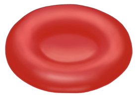

69
Student’s Book - Form Two

Biology for Secondary Schools
In animal cells, osmosis is important for reabsorption of water in the colon and kidneys. This process helps to maintain water balance in the body. In addition, the process of osmosis is used to preserve food by salting. This causes food such as meat to lose water and become dry. Salting makes food to stay longer without being contaminated by germs.
In lower organisms such as Amoeba, osmosis helps to remove waste and excess water from their bodies.
Effects of osmosis in living organisms
Osmosis is one of the most important processes that help to keep the organisms body conditions stable for their survival. However, the process of osmosis has various effects in the cells of living things as described below.
Osmosis in animal cells: Animal cells take in and lose water by the process of osmosis. However, when an animal cell is put in a hypotonic solution, it absorbs water. If it remains in the solution for a long time, it absorbs excess amounts of water. A cell that does not have a mechanism for removing excess water bursts due to its excessive internal pressure.
When an animal cell is placed in a hypertonic solution, it loses water. If it remains in the solution for a long
time, it loses a lot of water, shrinks, and shrivels. These effects of osmosis on animal cells can be observed in red blood cells. Under normal conditions, the osmotic pressure of red blood cells is equal to that of the blood plasma implying that they are isotonic. Thus, there is equal movement of water in and out of the cells. This helps to maintain the disc shape of these cells.
When red blood cells are placed in a hypotonic solution, they absorb water, causing the cell volume to increase.
Excessive amounts of water cause haemolysis (bursting).
When red blood cells are placed in a hypertonic solution, they lose water, leading to shrinking of the cell. This is referred to as crenation (Figure 3.5).

(b) Haemolysed red blood cell
(a) Normal red blood cell
(c) Crenated red blood cell
Figure 3.5: Effects of osmosis on a red blood cell
Osmosis in plant cells: In an isotonic solution, plant cells neither lose nor gain water. In a hypotonic solution,
08/04/2026 10:18:18